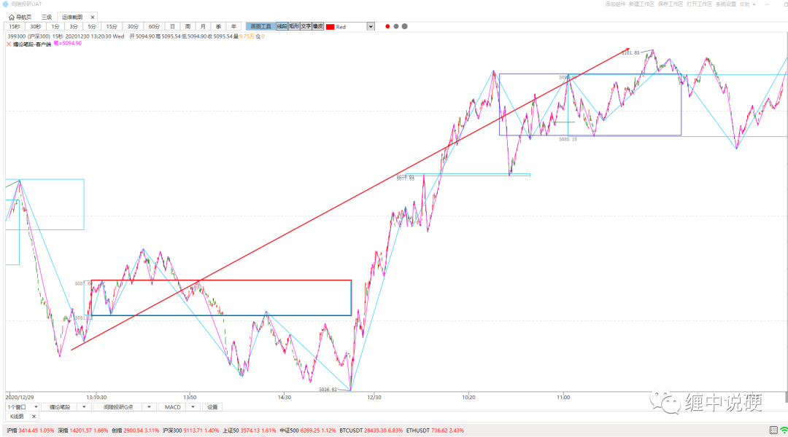
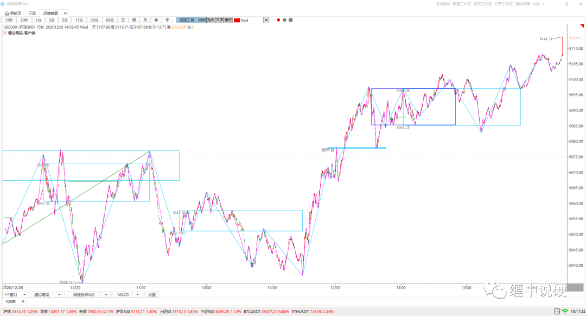
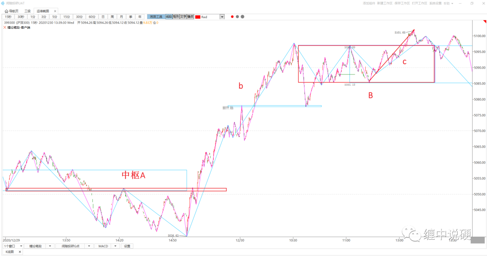

在缠论中，为什么会出现背了又背的情况

这个行情相比会有很多人判断5101点是趋势背驰点。

行情往后看会发现，显然5101点不能成为趋势背驰点，因为被了又背了！
为什么会出现这种情况呢？
回顾一下趋势背驰的定义：
1：至少有两个以上同级别中枢，且中枢之间没有任何触碰；
2：最后一段走势必然是次级别走势；即c必然是次级别；
3：最后一段走势c，必然是趋势；
4：最后一段走势c，必然包含最后一个本级别中枢的三类买卖点。
5：最后一段走势c，必然比前一段走势b的力度更小。
同时满足以上5条才是真正的趋势背驰。

根据定义我们进一步观察走势：
1：第一条是符合，有两个无任何触碰的同级别中枢A与B；
2：第二条是符合，c段内有上涨的笔中枢；
3：第三条不符合，c不是趋势；
4：第四条不符合，c没有包含最后一个本级别中枢的三买；
5：第五条是符合，c的上涨力度小于b。
综上所述，很显然5101点不是趋势背驰点，这里只是一个围绕中枢B的震荡，c的结束，并不能代表本级别走势的结束，所以后续是否突破5101点都是非常正常的事情。